Somos alunos de 3ºano de Engenharia Informática da Universidade de Aveiro, desenvolvemos este projecto no âmbito da disciplina de Introdução à Engenharia de Software.
O Froo² (lido Froo Froo), é um protótipo de cão remotamente controlado que interage com o ambiente que o rodeia consoante os dados recolhidos pelos sensores que possui. Inicialmente foi nos fornecido um protótipo já montado de um cão feito de peças Lego com o respetivo motor e o rotor das rodas. Acrescentamos um sensor de temperatura, dois de proximade (um para a frente do cão outro para trás) de modo a evitar colisão com objetos, um sensor de som, um coluna (que reproduz o som de um cão a ladrar).
Desenvolvemos um interface onde são apresentados alguns dados e através da qual o Froo² é controlado e criamos também uma base de dados. Tudo isto funciona graças a um sistema de mensagens utilizando um Raspberry Pi como servidor intermediário entre a interface com o utilizador e os diversos atuadores do Froo².
O principal problema foi trabalhar com o hardware, uma vez que foi o nosso primeiro contato com o Raspberry Pi e com os diferentes sensores. Perdemos realmente mais tempo do que o esperado, porque tivemos de aprender as coisas mais básicas. Outra das maiores dificuldades foi colocarmos valores na interface.
Andreia Patrocínio
Team Manager
Natural de Bragança, a Andreia será responsável pela atribuição de tarefas para garantir um trabaho consistente da equipa.
patrocinioandreia@ua.pt
Pedro Pires
Quality Assurance
O Pedro é natural do Sabugal,é membro do IEEE será responsável por verificar o progresso do projeto.
ptpires@ua.pt
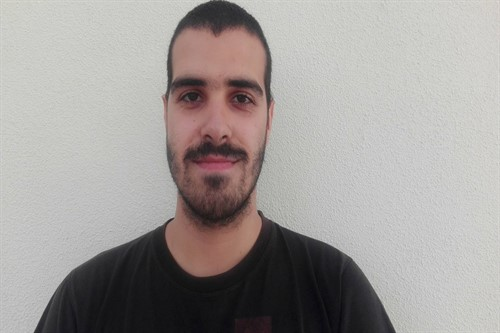
Nuno Silva
Documentation Manager
Nasceu no Porto, mas preferiu Aveiro para estudar.O Nuno será responsável pela documentação.
nuno1@ua.pt
João Artur Costa
Developer
Natural de Vila Real, o Artur foi escolhido com developer pelas suas boas capacidades de programação.
jarturcosta@ua.pt
Diogo Jorge
Developer
Veio de Leiria, é escuteiro, é membro ativo do IEEE, foi nomeado developer pelo seu fascínio pela eletrónica.
diogo.jorge@ua.pt
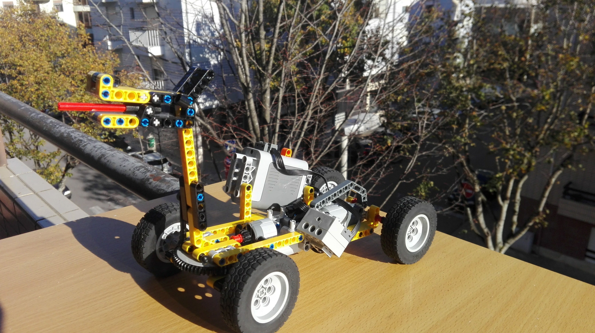
Froo Froo
Mascote
O Froo Froo será a nossa cobaia de serviço, mas também o nosso real companheiro nos próximos meses.
User Guide
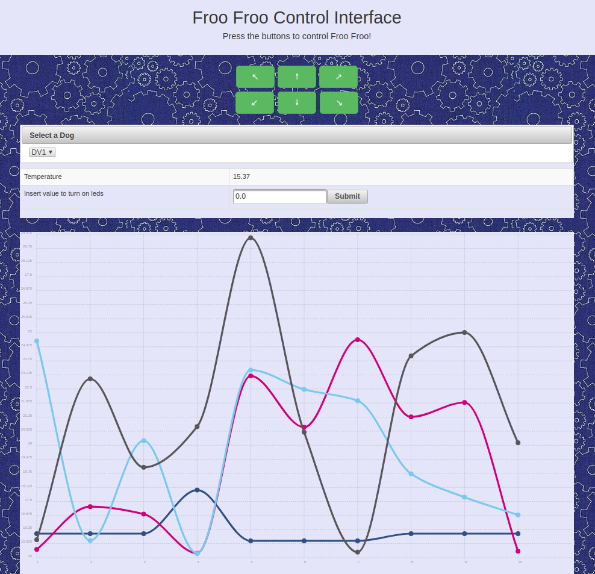
Nós temos uma interface do utilizador, apresentada na figura seguinte. As setas da figura servem para mover o Froo Froo, para além destas as teclas Q, W, E, A, S e D do teclado do computador também funcionam.
O utilizador pode controlar o Froo Froo. Para além disto, pode selecionar de entre uma gama de cães (o cão físico e uma série de cães virtuais) e verificar na interface o último valor de temperatura lido para esse cão. É importante salientar que os cães virtuais enviam valores random de temperatura para simular a leitura de um sensor real
Specification - Architecture
Apresentamos na figura seguinte o modelo da nossa arquitetura. O raspberry pi e todos os sensores estão ligados à cloud AMQP. A informação dos sensores é transmitida à base de dados desenvolvida em PostgreSQL. A user interface foi desenvolvida em JSF usando também Prime Faces, e vai ler os valores dos sensores á base de dados.
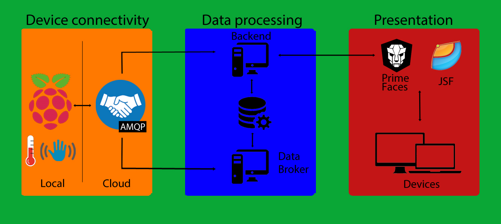
Specification - Features
Estão implementadas as seguintes funcionalidades apresentadas nos seguintes diagramas de casos de uso.
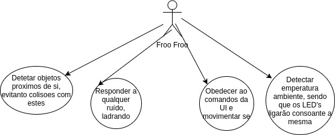
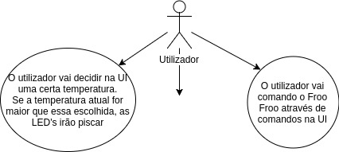
A nível de user interface a nossa maior dificuldade foi colocar valores na interface. Através da UI é possível controlar os movimentos do cão, definir os valores a que os leds implementados no cão devem ligar.
Para além do verdadeiro Froo Froo temos uma classe que permite criar Dogs Virtuais, estes caẽs enviam mensagens que simulam sensores de temperatura e proximidade. Foram bastante uteis uma vez que permitiram testar o nosso projeto sem a ligação do raspeberry pi.
Na interface existe uma dropdown que é atualizada consoante os cães que estão a enviar mensagens, selecionando um cão é possível ver o último valor de temperatura recebido, esse valor está guardado num hashmap. É ainda possível ver um gráfico com os últimos 10 valores da temperatura retirados da base de dados.
No hardware está implementado um sensor de temperatura que deteta a temperatura ambiente, se esta for superior à temperatura definida na definida pelo utilizador na interface, os leds ficam ligados. Temos dois sensores de proximidades, um na frente do cão e outro atrás, estes detetam objetos de forma a impedir que o cão choque contra os mesmos. Temos ainda um sensor de som que deteta um som mais elevado (estalar dos dedos ou bater palmas) e uma coluna que quando o sensor de som é ativado reproduz o barulho de um cão a ladrar.
Specification - Data Model
A nossa base de dados foi desenvolvida em PostegreSQL, uma vez que iríamos trabalhar com uma base de dados relacional esta foi a sugestão do professor.
Existem duas tabelas, uma para o sensor de proximidade outra para o sensor de temperatura, cada uma delas tem três colunas: id do sensor, valor lido, e a data em que esse mesmo valor foi lido. Estes dados chegam em mensagens do tipo "IDcão/Sensor/Sensor/Sensor(...)", onde cada Sensor tem os seguintes dados: "tipoSensor, valor, timestamp" e as informações são adicionadas à base de dados.
Por uma questão mais prática e tal como já foi dito, os valores apresentados na interface são retirados de um hashmap, e assim sendo a base de dados apenas serve para atualizar o gráfico que mostra os últimos 10 valores de temperatura lidos.
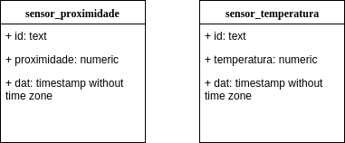
Developer
Montagem de Hardware
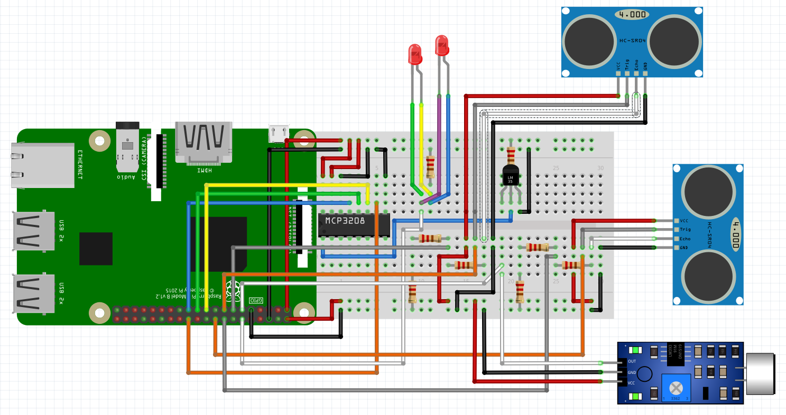
Raspberry Pi
Sistema usa RaspberryPi 3 Modelo B;
Instalar sistema operativo no RPI (raspbian ou noobs);
Transferir para o RPI o diretório "RPI" que se encontra no CodeUA;
Colocar o ficheiro recieve.py a inicializar no boot do RPI;
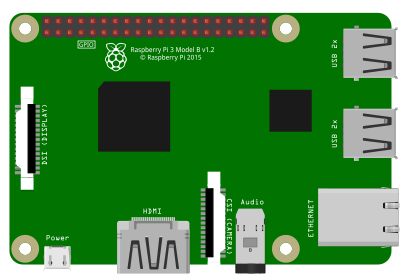
Breadboard / Jumpers / Resistências / Acessórios
Usar uma breadboard para fazer as ligações entre os sensores e varias componentes com o RPI;
Para realizar as ligações necessárias serão precisos jumpers macho/macho e jumpers macho/femea;
Para controlar a intensidade de algumas ligações iremos usar resistências de 220Ω, 330Ω e 1kΩ ;
Para alimentar o raspberry pi iremos usar um powerbank;
Iremos tambem usar uma coluna que estará ligada na entrada AUX do RPI;
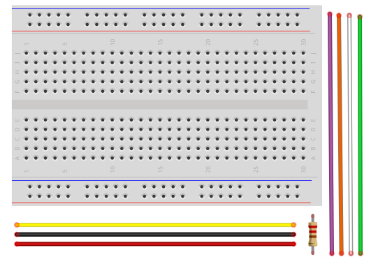
Sensor de temperatura
Usar sensor de temperatura LM335 juntamente com um conversor de sinal analógico para digital MCP3208;
Fazer todas as ligações necessárias para conectar o conversor ao Raspberry Pi: conectar dois pins a um Pin Ground do RPI, dois pins a um Pin 3.3V do RPI e os restantes quatro pins a quatro diferentes GPIO pins do RPI;
Ligar o sensor ao conversor, usando uma resistencia 220Ω para controlar a intensidade que passa para o sensor, não esquecer da ligação ground;
Alterar o ficheiro de codigo (temperature.pi) com os GPIO’s e o channel usado no conversor usados na montagem;
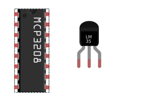
LED's
Ligar um GPIO à Breadboard e ligar ambos os Led’s a essa ligação, é possível os dois Leds apenas a um GPIO pois estes requerem pouca corrente, e desta forma apenas requer um comando para controlar os dois Leds;
Inserir uma resistencia 330Ω a fazer ligação entre o ground e o sistema;
A ativação dos Leds é feita dependente do sensor de temperatura;
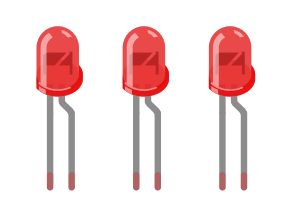
Sensor de proximidade
Três das ligações a este sensor são feitas sem necessidade de resistencias, uma a um Pin ground à escolha, outra a um Pin de 5V do RPI e outra diretamente a um GPIO à escolha;
A quarta ligação necessita de uma explicação mais complexa, esta necessita de ser ligada a uma resistencia de 1kΩ que por sua vez tem duas ligações, uma a um ground do RPI e outra a duas resistencias de 1kΩ em série somando 2kΩ(pois não existem resistencias de 2kΩ) que está ligada ao ground;
Alterar o ficheiro de codigo (ultrasonic.pi) com os GPIO’s usados na montagem;
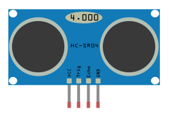
Sensor de som
Usar sensor de Som SWV2
Efectuar as ligações ao sensor, uma ligação 5V, uma ligação a um ground e outra a um GPIO à escolha
Alterar o ficheiro de codigo (sound.pi) com os GPIO’s usados na montagem
É possível fazer o ajusto dos decibeis necessarios para ativar o sensor, no neste sensor especifico apenas o é possível fazer através do ajuste de um pequeno parafuso
2. Abrir o NetBeans -> File -> Open Project -> Selecionar a pasta Froo2 ;
3. Caso falta alguma dependência, Froo2 -> Dependencies -> Download Declared Dependencies ;
(Considerando que a base de dados está previamente instalada);***
4. Package dog -> Dog.java -> run file (isto corre os cães virtuais que enviam dados virtuais de valores de temperatura e proximidade, verificar no output -> Dog que as mensagens estão a ser enviadas);
5. Botão do lado direito do Froo2 -> build, botão do lado direito do Froo2 -> run (isto vai abrir no browser a UI, no Output-> GlassFish verificar que as mensagens estão a ser recebidas e a informação está a ser colocada na base de dados).

 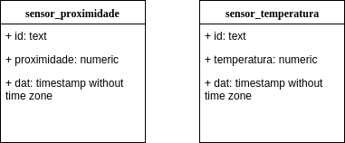
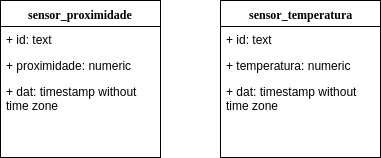